<title>OPC Questions In Color</title>
<meta name="claude:viewport-fit-sides" content="cover">
<link rel="preconnect" href="https://fonts.googleapis.com">
<link rel="preconnect" href="https://fonts.gstatic.com" crossorigin>
<link rel="stylesheet" href="https://fonts.googleapis.com/css2?family=Ysabeau:wght@500;600&family=Inter:wght@400;500;600&display=swap">
<style>
  /* One column of rice paper, like the site: each question before and after. A single light look
     on purpose (paintings on the site's own paper). */
  :root {
    --paper: #f3efe6;
    --ink: #1b1915;
    --muted: #5c564c;
    --line: #d8d1c3;
    --pick: #6b4a7a;
    --display: "Ysabeau", "Iowan Old Style", Georgia, serif;
    --body: "Inter", system-ui, -apple-system, "Segoe UI", sans-serif;
    color-scheme: light;
  }
  body {
    background: var(--paper);
    color: var(--ink);
    font-family: var(--body);
    font-size: 17px;
    line-height: 1.55;
    padding-left: max(16px, env(safe-area-inset-left, 0px));
    padding-right: max(16px, env(safe-area-inset-right, 0px));
    padding-block: 28px 64px;
  }
  main { max-width: 1080px; margin: 0 auto; display: grid; gap: 40px; }
  h1, h2 { font-family: var(--display); font-weight: 600; line-height: 1.08; text-wrap: balance; margin: 0; }
  h1 { font-size: clamp(34px, 6vw, 56px); }
  h2 { font-size: clamp(22px, 3vw, 28px); }
  p { margin: 0; max-width: 62ch; }
  .lead { font-size: 19px; }
  .muted { color: var(--muted); font-size: 15px; }
  .pick { color: var(--pick); font-weight: 600; font-size: 15px; letter-spacing: 0.02em; }
  header { display: grid; gap: 14px; }
  section { display: grid; gap: 12px; padding-top: 20px; border-top: 1px solid var(--line); }
  .pair { display: grid; grid-template-columns: minmax(0, 1fr) minmax(0, 1fr); gap: 12px; }
  .phone { max-width: 260px; }
  figure { margin: 0; display: grid; gap: 6px; min-width: 0; align-content: start; }
  figure img { width: 100%; height: auto; display: block; border: 1px solid var(--line); border-radius: 6px; background: #fff; }
  figcaption { font-size: 14px; color: var(--muted); }
  .reply { padding: 18px 20px; border: 1.5px solid var(--ink); border-radius: 12px; display: grid; gap: 8px; }
  @media (max-width: 640px) { .pair { grid-template-columns: minmax(0, 1fr); } }
</style>

<main>
  <header>
    <p class="muted">BiGH website · Advanced OPC Formula, part 8 · November 17, 2026</p>
    <p class="pick">You picked A · built, not live yet</p>
    <h1>The questions, in color</h1>
    <p class="lead">Same six pictures, now in the page’s color. One changed more: the capsule answer showed white powder spilling out. Now it’s two closed capsules on a green leaf.</p>
    <p class="muted">With this, every painting on the OPC page is in color. The answers’ words did not change.</p>
  </header>

  <section aria-labelledby="capsule">
    <h2 id="capsule">What is the capsule made of?</h2>
    <p>No more powder. The capsule is plant-based, so it lies on a leaf.</p>
    <div class="pair">
      <figure>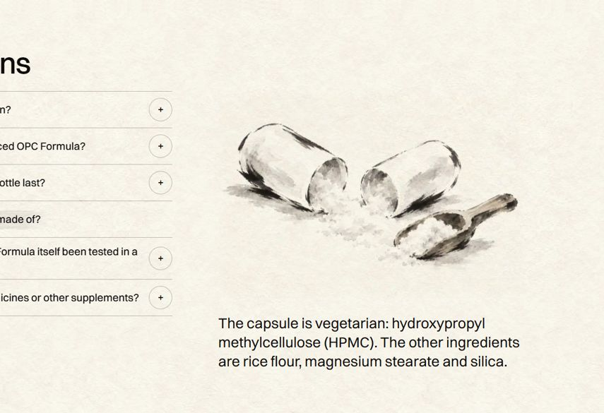<figcaption>Before (live)</figcaption></figure>
      <figure>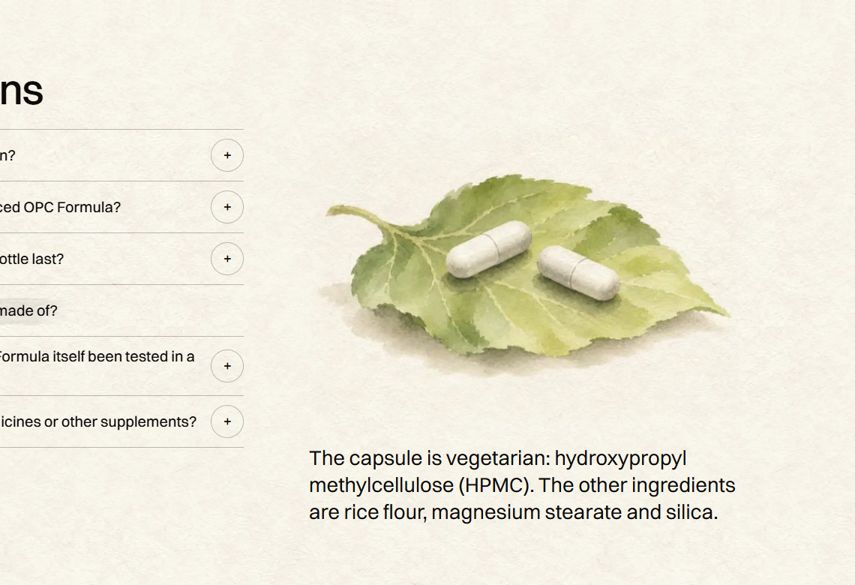<figcaption>After</figcaption></figure>
    </div>
    <figure class="phone">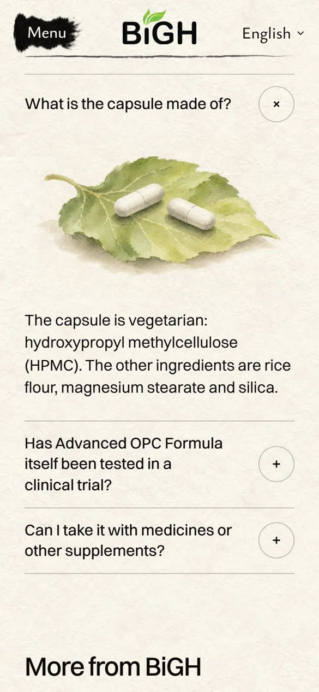<figcaption>On a phone</figcaption></figure>
  </section>

  <section aria-labelledby="what">
    <h2 id="what">What does OPC mean?</h2>
    <div class="pair">
      <figure>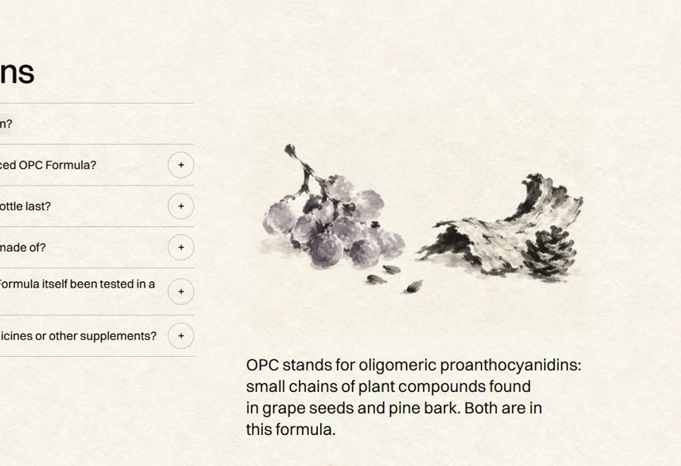<figcaption>Before</figcaption></figure>
      <figure>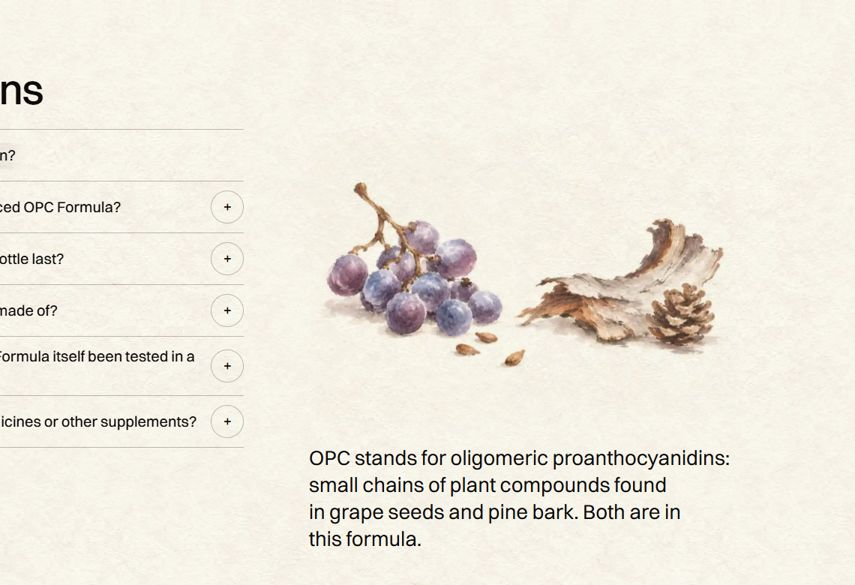<figcaption>After</figcaption></figure>
    </div>
  </section>

  <section aria-labelledby="take">
    <h2 id="take">How do I take it?</h2>
    <div class="pair">
      <figure>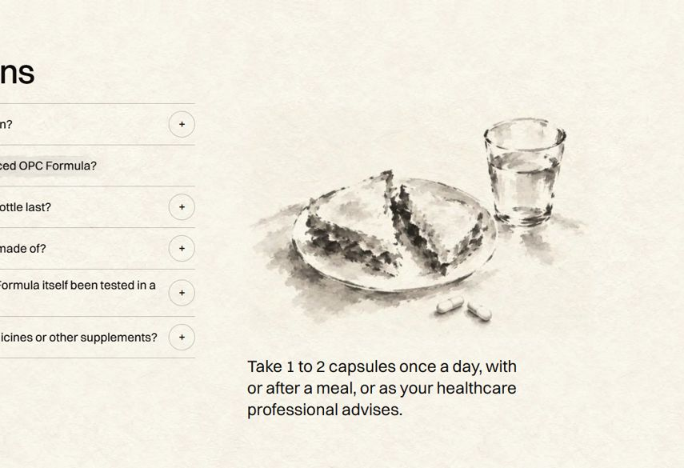<figcaption>Before</figcaption></figure>
      <figure>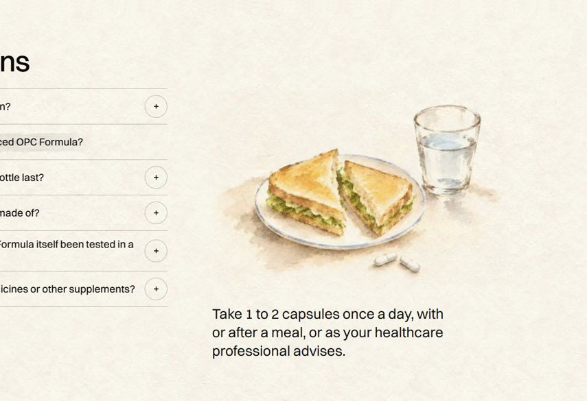<figcaption>After</figcaption></figure>
    </div>
  </section>

  <section aria-labelledby="month">
    <h2 id="month">How long does one bottle last?</h2>
    <div class="pair">
      <figure>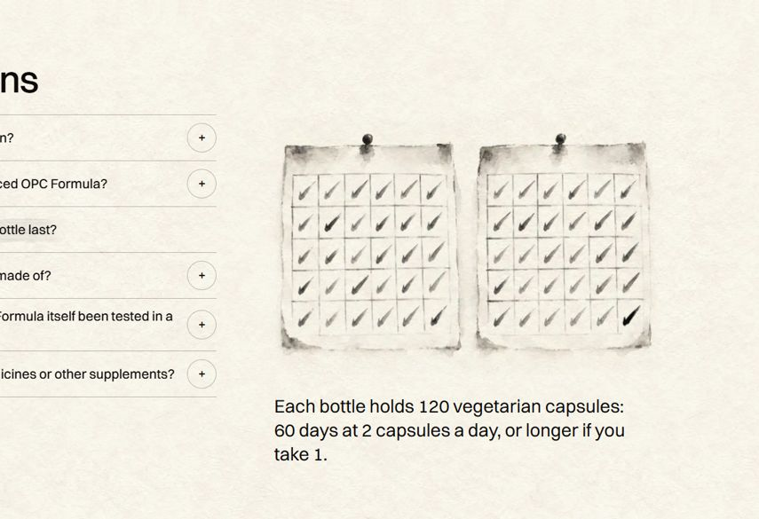<figcaption>Before</figcaption></figure>
      <figure>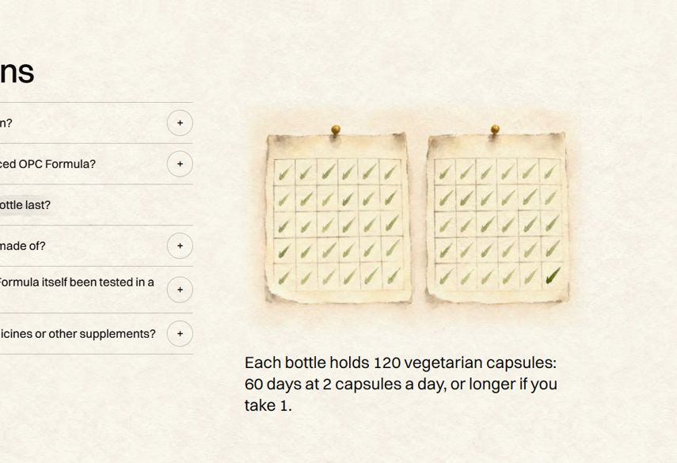<figcaption>After</figcaption></figure>
    </div>
  </section>

  <section aria-labelledby="studied">
    <h2 id="studied">Has it been tested in a clinical trial?</h2>
    <div class="pair">
      <figure>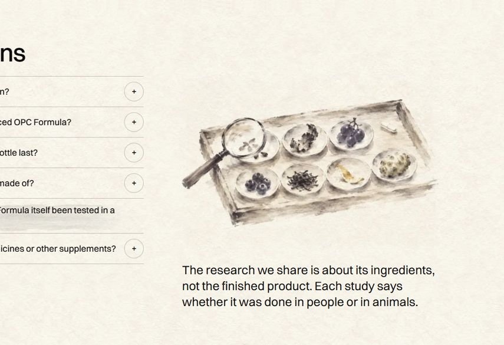<figcaption>Before</figcaption></figure>
      <figure>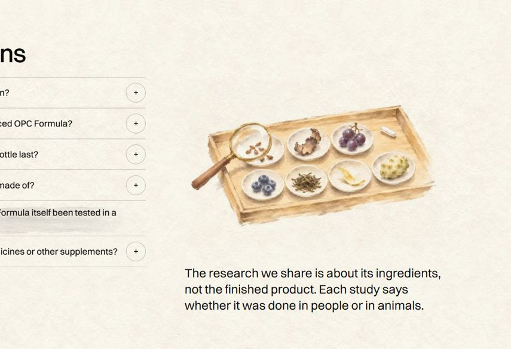<figcaption>After</figcaption></figure>
    </div>
  </section>

  <section aria-labelledby="doctor">
    <h2 id="doctor">Can I take it with medicines?</h2>
    <div class="pair">
      <figure>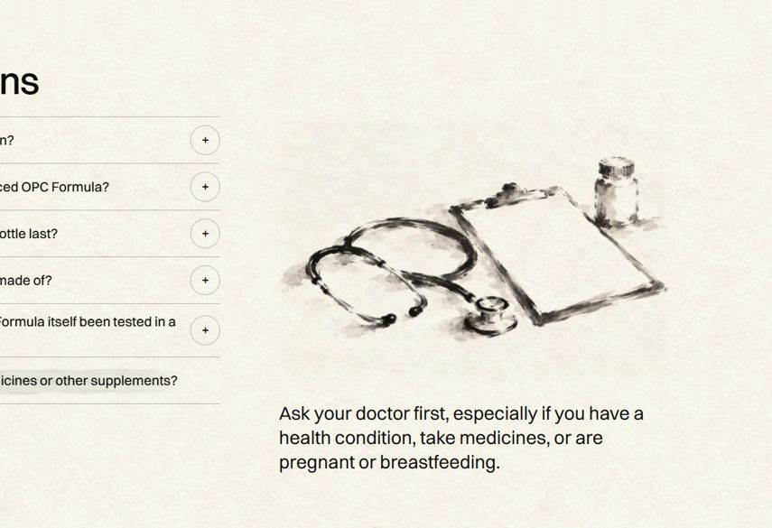<figcaption>Before</figcaption></figure>
      <figure>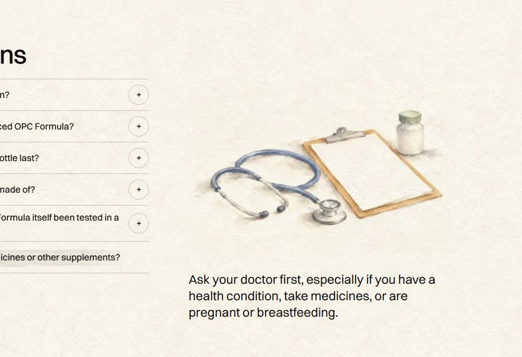<figcaption>After</figcaption></figure>
    </div>
  </section>

  <section class="reply" aria-labelledby="reply">
    <h2 id="reply">Your call</h2>
    <p>Reply <strong>yes</strong> to put them live, or tell me which one to change.</p>
  </section>
</main>
